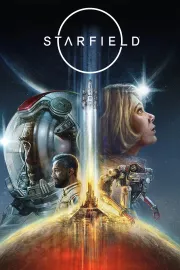

- Desarrollador: Bethesda Softworks
- Género:
- Rol
- Acción
- RPG
- Jugadores:
- 1
- Competitivo (NO)
- Cooperativo (NO)
Ficha técnica
| Voces/Textos | Soporte | Requis. mínimos | Requis. recomendados |
|---|---|---|---|
| Español | Digital |
SO: Windows 10 64 bits Procesador: AMD Ryzen 5 2600X, Intel Core i7-6800K Memoria: 16 GB de RAM Gráficos: AMD Radeon RX 5700, NVIDIA GeForce 1070 Ti DirectX: Versión 12 Red: Conexión de banda ancha a Internet Almacenamiento: 125 GB de espacio disponible Notas adicionales: Necesita SSD |
SO: Windows 10/11 64 bits Procesador: AMD Ryzen 5 3600X, Intel i5-10600K Memoria: 16 GB de RAM Gráficos: AMD Radeon RX 6800 XT, NVIDIA GeForce RTX 2080 DirectX: Versión 12 Red: Conexión de banda ancha a Internet Almacenamiento: 125 GB de espacio disponible Notas adicionales: Necesita SSD |
| Sonido | Lanzamiento | ||
| Dolby Digital / AC3 | 06/09/2023 |
¡¡¡SORTEO!! Si quieres una copia gratuita de Starfield ¡Participa en el sorteo!